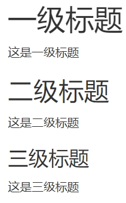
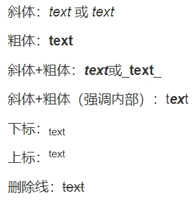
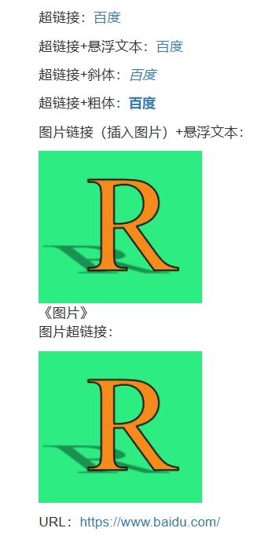
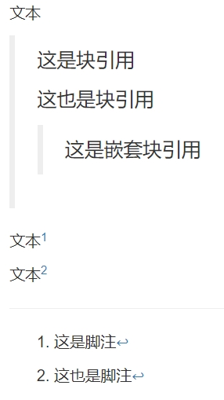
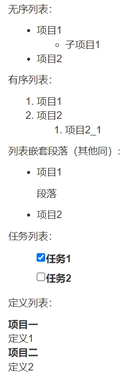
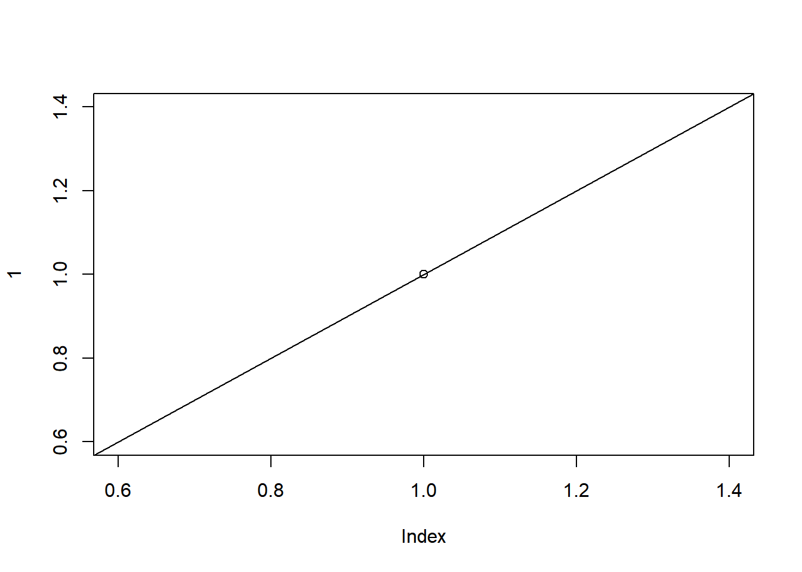
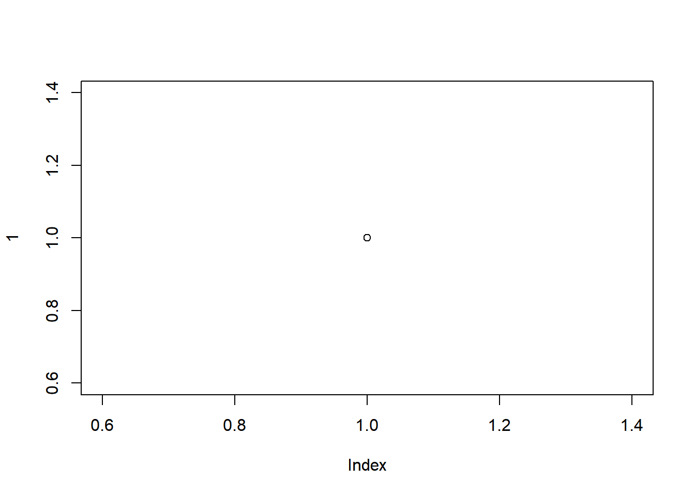

1.3 语法介绍
下面介绍个人认为较为常用语法，在内容上会有所缩减，若想了解更为全面的语法，建议优先查看markdown官方教程，再以其他教程或手册的内容作为补充。
1.3.1 标题
n个’#‘代表第n级标题，注意’#’后面跟空格。
# 一级标题
这是一级标题
## 二级标题
这是二级标题
### 三级标题
这是三级标题
图 1.5: 不同等级的标题
除了标题等级外，还可以为标题添加标识符，即# 标题{#标识符}。通过分配标识符，你就可以在文中进行交叉引用来跳转到对应的章节，只需在特定的地方使用[关键词](#标识符)即可。
特别地，你可以使用{-}或{.unnumbered}来表示不给该标题编号。这些未编号的标题主要为那些非主体部分的章节，例如前言、参考文献等等。如果你既不想为标题编号，又不想其出现在目录中，你可以设置{.unlisted .unnumbered}。
### 鸢尾花 {#iris}
详见[鸢尾花](#iris)图 1.6: 标题标识符
1.3.2 字体样式
斜体：_text_ 或 *text*
粗体：**text**
斜体+粗体：***text***或___text___
斜体+粗体（强调内部）：t***ex***t
下标：~text~
上标：^text^
删除线：~~text~~
图 1.7: 字体样式
1.3.3 换行
平时的换行习惯（直接按回车键）是不起作用的。你可以在第一段后面加两个及以上空格后再按回车键。或者按两下回车键，即RMD中段落与段落之间存在一个空行。注意若没有换行在有些时候将会影响显示的结果。
# 法一
第一行。空格空格
第二行
# 法二
第一行
第二行1.3.4 链接
超链接就是[text](link)的形式。图片链接（其实就是插入图片）则是，注意多了个!。
无论是超链接还是图片链接，都可以设置悬浮文本（就是鼠标放上去会有文本显示），悬浮文本'text'放在link或者path后面，中间空格相隔即可。
此外，你还可以设置图片超链接（即点击图片进行跳转），只要把图片链接的形式放到超链接中的text处即可。
如果你直接在文本中写入URL，那么他会自动转为超链接。
超链接：[谢益辉](https://yihui.org/)
超链接+悬浮文本：[谢益辉](https://yihui.org/ '博客')
超链接+斜体：*[谢益辉](https://yihui.org/)*
超链接+粗体：**[谢益辉](https://yihui.org/)**
图片链接（插入图片）+悬浮文本：

图片超链接：
[](https://yihui.org/)
URL：https://yihui.org/
图 1.8: 链接
1.3.5 引用
块引用，跟在’>‘后面的文本即为块引用，注意换行时也需要有’>‘。嵌套块引用则跟在两个’>’后面。
脚注，第一种写法是text^[footnote]，第二种写法是text[^1]并隔开一行[^1]:footnote。实际上，第二种写法的脚注[^1]:footnote可以放在除块内（列表、块引用等）以外的任何地方，并且可以使用除数字外的其他唯一标识来区分，最终脚注会按先后顺序自动排序。
文本
> 这是块引用
>
> 这也是块引用
>
>> 这是嵌套块引用
文本^[这是脚注]
文本[^1]
[^1]: 这也是脚注
图 1.9: 块引用与脚注
1.3.6 列表
无序列表：* text或- text或+ text。注意空格。另起一行缩进两个或两个以上空格表示子列表。
有序列表：1. text、2. text等等。另起一行缩进三个或三个以上空格表示子列表。
列表嵌套段落/块引用/代码块/图片：上下空行，前面缩进三个空格。
任务列表：- [x] text。其中x表示是否打钩，注意空格。任务列表具有交互性。
定义列表：首行定义术语，另起一行冒号+一个空格+定义。
列表需与周围内容用空行隔开。
无序列表：
- 项目1
- 子项目1
- 项目2
有序列表：
1. 项目1
2. 项目2
1. 项目2_1
列表嵌套段落（其他同）:
- 项目1
段落
- 项目2
任务列表：
- [x] 任务1
- [ ] 任务2
定义列表：
项目一
: 定义1
项目二
: 定义2
图 1.10: 列表
1.3.7 代码
内联代码和代码块的基本介绍已经在1.2节有所提及。接下来介绍r代码块的具体设置。
knitr包使得R能够和Markdown有机结合在一起。在knitr包中提供了丰富的参数选项，这里仅介绍较为常见的一些设置，完整内容请参考官网。
代码块的设置可以写在{r}中（必须写在同一行），形如{r label, tag=value}。也可以写在代码块内的#|后面，如下所示。
```{r}
#| label
#| tag=value
code
```label
设置该代码块的标签（注意是在r的空格后面，并且label不用带引号）。也可以同
tag=value一样进行设置，此时形如{r, label='text', tag=value}，注意有逗号。注意名称中不要包含空格、下划线和点，路径也是。eval
是否运行代码块，默认为
TRUE。可以输入数值型向量，例如c(1,3)表示运行第1、3行代码，-c(1,3)表示运行除了第1、3行以外的所有代码。echo
是否呈现源代码，默认为
TRUE。可以输入数值型向量，例如1:5表示呈现第1至5行代码，-1表示呈现除了第1行以外的所有源代码。results
用来控制如何呈现文本输出结果，默认为
'markup'，字符串。可选值为'markup'、'asis'、'hold'、'hide'。markup
根据输出格式，用适当的环境来标记文本输出。例如在HTML中，输出结果就是被包含在框框里面。
## 被包在围栏里## [1] "被包在围栏里"asis
对输出结果不进行任何标记，该怎样就怎样。
该怎样就怎样
[1] “该怎样就怎样”
hold
等所有代码呈现完之后再统一呈现结果。
## 统一呈现结果 ## [1] "统一呈现结果"hide
隐藏文本输出结果。
'hide'等价于FALSE表示。
collapse
如果可以的话，是否将源代码和输出结果放在同一个块中，默认为
FALSE。一般的输出结果就和
results='markup'的示例一样include
是否将源代码和结果显示出来，默认为
TRUE。warning
是否在输出结果中显示警告信息，默认为
TRUE。若为FALSE，则不显示；若为NA，则警告信息将会被打印在控制台。message
是否在输出结果中显示提示信息，默认为
TRUE。error
是否在遇到错误时继续运行后面的代码，默认为
FALSE。若为FALSE，则遇到错误就停止，并且错误也会显示在控制台里。若为TRUE，则即使遇到错误也会继续运行后面的代码。除了TRUE和FALSE选项，还可以输入数字0、1、2。0如同TRUE，2如同FALSE，而1则表示在遇到错误时停止，但不会再控制台里报错。tidy
是否格式化输出R代码，默认为
FALSE。若为TRUE，则使用formatR包（得提前下载）的tidy_source()函数来对R代码进行格式化处理，也就是用formatR包的风格来呈现源代码。tidy.opts
为
tidy传递参数，列表。prompt
是否为R代码添加提示符，默认为
FALSE。若为TRUE，则会在行首添加’>‘和’+’符号。comment
用以控制输出结果的前缀，默认为’##‘。你可以用
comment=''来将’##’去掉。## [1] 1[1] 1highlight
是否高亮语法，默认为
TRUE。cache
是否对该代码块进行缓存，默认为
FALSE。对于缓存的代码块，将会生成一个文件夹来存储信息。在第二次使用时将会跳过该代码块，而从文件夹中提取信息，除非该代码块有所改动。
1.3.8 表格
你可以在Visual模式中，找到工具栏里的’Insert’选项来插入表格。
你也可以使用Markdown语法来创建表格。用三个及以上的’-‘来创建标题，并用’|‘隔开每列，向左右两侧添加’:’来实现对齐（示例中依次是左对齐、居中、右对齐）。
而knitr包提供了kable()函数来较为方便地控制表格。kable()能够将矩阵或数据框转化为表格，但仅能在HTML、PDF、Word中使用。注意kable()无法精细地设置单元格样式或合并单元格。
kable(x, format, digits = getOption("digits"), row.names = NA,
col.names = NA, align, caption = NULL, label = NULL,
format.args = list(), escape = TRUE, ...)x
矩阵或数据框。
format
设置表格样式，字符串。可选值有
'pipe'、'simple'、'latex'、'html'、'rst'、'jira'、'org'。注意可选值应当与文档的输出格式相匹配，'pipe'和'simple'适用于所有输出格式，RMD文件默认使用'pipe'。如果你只需要一种非默认的表格样式，你可以在全局设置中设置表格样式，如options(knitr.table.format = 'html')。Sepal.Length Sepal.Width Petal.Length Petal.Width Species 5.1 3.5 1.4 0.2 setosa 4.9 3.0 1.4 0.2 setosa Sepal.Length Sepal.Width Petal.Length Petal.Width Species 5.1 3.5 1.4 0.2 setosa 4.9 3.0 1.4 0.2 setosa digits
保留小数点位数，数值或数值向量。若为数值向量，则根据数值向量长度从第一列开始对应过去，例如表格有5列，数字向量长度为3，则仅对前三列生效。若遇到字符串型的列，可以在数值向量中设置0或
NA。format.args
为
format()传递参数来格式化数值，列表。例如可以对数值采用科学计数法，或者每隔三位用’,’隔开。df = data.frame(x = c(12345,12138),y = c(13548987,13548581)) kable(df, format.args=list(scientific=TRUE))x y 1.2345e+04 1.354899e+07 1.2138e+04 1.354858e+07 df = data.frame(x = c(12345, 12138),y = c(13548987, 13548581)) kable(df, format.args = list(big.mark = ','))x y 12,345 13,548,987 12,138 13,548,581 row.names
是否包含行名，默认为
TRUE。默认情况下，如果行名既不是NULL也不等于1:nrow(x)，则包含行名。col.names
表格的列名，字符串向量。
align
对齐方式，字符串或字符串向量。可选值为
'l'、'c'、'r'，分别为左对齐、居中对齐、右对齐。默认为数值型列右对齐，其余列左对齐。除了设置字符串向量来确定每一列的对齐方式，你还可以输入一个多字符的字符串，例如align='lcrr'等价于align=c('l','c','r','r')。caption
设置表格标题，字符串。注意
kable()并不能让表格标题居中，你需要求助别的包（如kableExtra包）或者在HTML中自定义样式。label
设置表格的索引标签，字符串。若不想设置标签，则
label = NA。escape
当输出HTML或Latex的表格时，是否对特殊字符进行转义，默认为
TRUE。
有时表格中会出现缺失值，默认用NA展示。你可以在全局设置中设置缺失值的替换值，如options(knitr.kable.NA = '-')
| x | y |
|---|---|
| 123 | — |
| — | 15 |
如果你想并排放置两个表格，那么你可以使用kables()（仅适用于HTML及PDF），该函数的x参数接收列表，列表中的每个元素均为kable()对象，其余参数同kable()。
kables(
list(
kable(iris[1:2,1:2], caption = '鸢尾花'),
kable(mtcars[1:3,1:3], caption = '车车')
),
caption = '两个表格并排'
)
|
|
如果你想在for循环中生成表格，那么你可以采取如下的办法。注意results='asis'、print()是必需的。末尾的cat('\n')是为了更好地区分打印出来的表格，否则有些时候就会弄混。
| Sepal.Length | Sepal.Width | Petal.Length | Petal.Width | Species |
|---|---|---|---|---|
| 5.1 | 3.5 | 1.4 | 0.2 | setosa |
| 4.9 | 3.0 | 1.4 | 0.2 | setosa |
| Sepal.Length | Sepal.Width | Petal.Length | Petal.Width | Species |
|---|---|---|---|---|
| 5.1 | 3.5 | 1.4 | 0.2 | setosa |
| 4.9 | 3.0 | 1.4 | 0.2 | setosa |
虽然kable()相较Markdown语法创建表格更为方便，但仍有不足之处。为避免正文过长，将在附录A处介绍kableExtra包。
1.3.9 图片
在1.3.4节已经介绍了如何插入图片以及如何为图片设置超链接。这里介绍knitr包对图片的设置。
knitr包支持两种方式生成图片：一是由R绘制得到，二是从本地插入。前者是在r代码块中输入绘图代码即可完成，例如图1.2。后者通过为knitr::include_graphics()函数提供图片路径即可从本地插入图片。同代码块一样，二者都可以在{r, tag=value}中对图片进行设置。
fig.width/fig.height
图像的宽/高，单位为英寸，默认均为
7。fig.dim
是
fig.width和fig.height的简写，即fig.dim=c(4,5)等价于fig.width=4和fig.height=5。fig.asp
图像的高度除以宽度，即高宽比。当设置好高度（宽度）时，可根据高宽比来控制对应的宽度（高度）。
out.width/out.height
不同于
fig.width和fig.height设置图像本身的宽度与高度，out.width和out.height控制图像在输出文档中的宽度与高度。对于不同的输出格式，可取不同的值。例如对于HTML，可以将图片的宽度设置为out.width='300px'，也就是宽为300像素。或者有out.width='75%'，即图片宽度占页面宽度的75%。图1.1就是out.width='75%'，你可以对该图点击右键，选择’检查’，即可在页面源码处看到该参数。out.extra
为特定的输出文档传入额外的参数，字符串。例如在HTML中，
out.extra的值将会被传入到<img>标签中，如out.extra='style="border:5px solid orange;"'（css的内联样式）将会为图片添加宽为5像素的橙色边框。dpi
每英寸的点数，默认为
72。dpi越大，图像越清晰（dpi x 英寸 = 像素）。fig.align
对齐方式，可选值为
'default'、'left'、' right'、'center'，默认为'default'，表示不会做任何对齐调整。注：该选项不适用
word输出。fig.cap
图片标题。
fig.link
为图片添加的超链接，字符串。
fig.alt
在HTML输出中，为图片添加alt属性，字符串。当图片无法正常显示时，将显示该段文本描述。如果提供了
fig.cap，则其赋值给fig.alt。fig.env
LaTex中插图的类型，默认为
'figure'。fig.scap
LaTex中的短标题。
fig.lp
图片的标签前缀，默认为
'fig:'。实际上，图片的真实标签由该前缀和代码块的标签组合而成。图片的完整标签可用于索引。(不建议修改，可能会影响到交叉引用)fig.id
在HTML输出中，是否为图片在
<img>标签中添加唯一标识的id属性，默认为NULL。默认id值将由fig.lp、chunk label、fig.cur组成。其中fig.cur是隐藏的选项，表示图片当前的次序号。fig.pos
用于
\begin{figure}[]的图片位置参数，可选值为'H'（放置在当前位置，即尽可能靠近代码块）、't'（放置在页面顶部）、'b'（放置在页面底部）、'p'（放置在单独一面）、'!H'（强制放置在当前位置），默认为''。（只针对pdf）fig.path
为生成的图片设置存储路径，默认为
'figure/'，即与当前RMD文件同目录的figure文件夹里。代码块的标签label及生成的次序将会成为图片的存储名称。完整路径形如'figure/label-1.png'。fig.keep
哪些图片需要被展示，可选值为
'high'、'none'、'all'、'first'、'last'及数值向量，默认为'high'。high
仅展示高级绘图命令（例如产生新图的命令）的结果，低级绘图命令（例如增添细节的命令）会被作用到已有的图片之中。

none
不展示任何图片。
all
展示所有图片，低级绘图命令会另外产生新的图片。



first
只展示第一幅图。

last
只展示最后一幅图。

数值向量
以数值向量为索引展示对应的图片。

fig.show
如何呈现图片，可选值为
'asis'、'hold'、'animate'、'hide'，默认为'asis'。asis
图片跟在对应的代码后面。


hold
所有图片等代码块运行完后再出现。


animate
以动画的形式展示图片，详见
animation.hook。hide
并不展示图片。
animation.hook
在HTML中用何种方式生成动画，可选值为
'ffmpeg'、'gifski'，默认为`‘ffmpeg’。前者生成WebM视频，后者生成gif动图。在选择
'ffmpeg'时，系统报错Could not find ffmpeg command.You should either change the animation.fun hook option or install ffmpeg with libvpx enabled.，需要配置相应的环境。由于之前在下载gganimate包时同时安装了gifski包，所以选择'gifski'能够正常生成动图。个人观点：如果想表达这种具有变化性特征的一系列图片或者数据，gif动图或者其他包（如shiny，gganimate）已经能较好地满足需求了。如果想要以视频的形式呈现的话，可以尝试利用HTML语法来插入视频。
interval
帧之间的间隔秒数，默认为1。
dev
图形设备，默认LaTex为
'pdf'，HTML/Markdown为'png'。图像大小总是以英寸（inches）为单位。代码块选项dev、fig.ext、fig.width、fig.height、dpi的值可以为向量，表示对同一内容生成不同规格的图。dev.args
以列表的形式为特定的
dev传入更为详细的参数。如果dev为向量，则为嵌套列表。fig.ext
文件扩展名。如果你为同一内容的同一图形设备（不同图形设备自然有不同后缀名）生成多种不同规格的图片，那么新生成的图片将会覆盖掉旧的图片。此时，你需要为其添加不同的扩展名。例如
dev=c('png'),fig.width = c(10, 6)仅会生成一幅图，而dev=c('png'), fig.width = c(10, 6), fig.ext=c('1.png', '2.png')将会生成两幅扩展名分别为’1.png’和’2.png’的图片。
1.3.10 数学公式
关于如何编辑数学公式大家可以参考这篇博客。